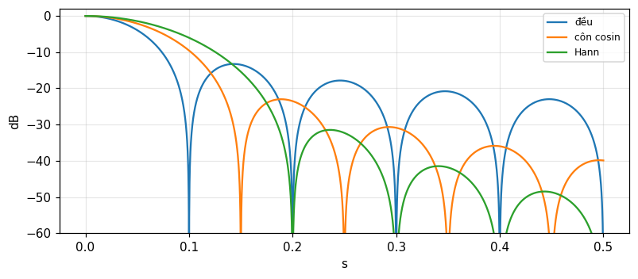
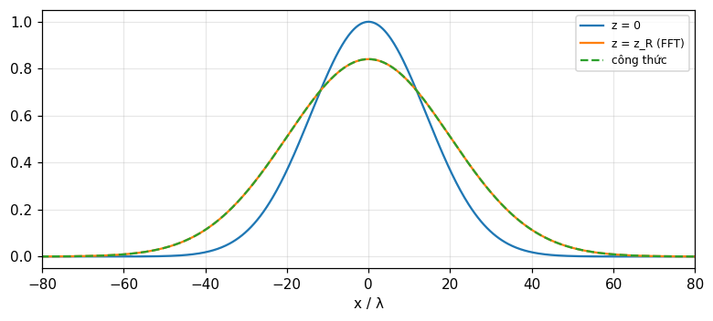

Ăng ten và quang học: khẩu độ, phổ góc, chuyển giao và nhiễu xạ
Trường xa của khẩu độ là biến đổi Fourier của phân bố trường: độ rộng chùm, xoay chùm, dãy ăng ten, độ nhạy phổ, MTF, phổ sóng phẳng, nhiễu xạ Fresnel (Bracewell, chương 15).
Bài giảng (slide) Thực hành với Jupyter Notebook Quiz tự kiểm tra
Bài giảng (slide)
Ăng ten và quang học: khẩu độ, phổ góc, chuyển giao và nhiễu xạ
- Thiết lập quan hệ Fourier giữa phân bố trường trên khẩu độ và phổ góc (trường xa) bằng nguyên lý Huygens.
- Dịch các định lý Fourier thành hiệu ứng ăng ten: độ rộng chùm, xoay chùm bằng gradient pha, quy tắc dãy của dãy, giao thoa kế hai phần tử, côn cửa sổ.
- Dùng hàm độ nhạy phổ, hàm truyền điều biến (MTF) và độ hiển thị vân (Michelson) như hàm truyền của hệ quét/tạo ảnh.
- Phân biệt sóng truyền và sóng tiêu tán (|s|>1) trong phổ sóng phẳng, và tính trường Fresnel bằng phổ góc.
- Áp dụng cho bài toán thực: búp phụ, khoảng cách dãy, độ phân giải mắt, lấy mẫu ảnh tiêu diện.
Dùng nút, chấm tròn hoặc phím ← → để chuyển slide.
Khẩu độ một chiều và phổ góc
- Nguyên lý Huygens
- Khẩu độ đều và các không điểm
- Đơn xung và các biến thể
Vì sao ăng ten gần với Fourier
Lý thuyết ăng ten đủ tương tự lý thuyết dạng sóng và phổ để quen một lĩnh vực thì mang sang lĩnh vực kia được, một khi có chìa khóa. Bước đầu là lập quan hệ biến đổi Fourier trong lĩnh vực này rồi xem các đại lượng vật lý nào tham gia. Vì mục đích là tăng tính linh hoạt của biến đổi Fourier như công cụ, chương chỉ đề cập một khía cạnh của lý thuyết ăng ten, nhưng nó có tầm quan trọng nền tảng. Bracewell bắt đầu với khẩu độ một chiều: đủ cho nhiều ăng ten mà tính hướng tách được thành tích của tính hướng các khẩu độ một chiều, và đủ để lập phép tương tự (tr. 406 đến 407). Phần lớn nội dung dùng được, với đổi thuật ngữ, cho cả quang học: ánh sáng song song tới một khẩu độ nhiễu xạ ra không gian giống như bức xạ vô tuyến từ khẩu độ cùng hình dạng (nhưng lớn hơn tỉ lệ với bước sóng).
Khẩu độ phẳng tương đương
Một loa điện từ đưa năng lượng vào nửa không gian vô hạn có thể thay bằng mô hình khẩu độ phẳng: xét dòng năng lượng sang nửa mặt phẳng phải, nguồn tương đương một phân bố điện trường trên mặt phẳng khẩu độ AA'; trường bằng 0 ở phần bị dẫn điện chiếm, còn phân bố xác định được duy trì ở miệng loa. Nếu mọi điều kiện không phụ thuộc y ta gọi ăng ten là khẩu độ một chiều; ngoài ra giả sử miệng rộng vài bước sóng, tương đương giả thiết ăng ten có tính hướng cao. Mọi ăng ten đều thay được, về hiệu ứng xa, bằng phân bố trường phẳng, nên giới hạn ở khẩu độ phẳng không mất tổng quát về nguyên tắc; nhưng một số (như dãy tia dọc Yagi) quá không phẳng nên xét cách khác (tr. 407). Trường tại x là F(x)\cos[\omega t-\phi(x)], phasor E(x)=F(x)e^{-i\phi(x)}.
Nguyên lý Huygens dẫn tới biến đổi Fourier
Theo Huygens, trường tại điểm xa là tổng tác động của các phần tử khẩu độ; mỗi phần tử có biên độ tỉ lệ với trường tại phần tử và trễ pha bằng số chu kỳ trên đường tới điểm xa. Tại khoảng cách r, trường do phần tử giữa x và x+dx tỉ lệ E(x)e^{-i2\pi r/\lambda}dx. Với hướng lập góc \theta so với trục z và R là khoảng cách tới gốc, xấp xỉ r\approx R-x\sin\theta; gộp thừa số pha trung bình e^{-i2\pi R/\lambda} vào hằng số, trường xa theo hướng s=\sin\theta là \int E(x)e^{i2\pi xs/\lambda}dx (tr. 408). Đo khoảng cách theo bước sóng, x_\lambda=x/\lambda, ta có phổ góc P(s)=\int E(x_\lambda)e^{-i2\pi x_\lambda s}dx_\lambda, và nghịch đảo E(x_\lambda)=\int P(s)e^{i2\pi x_\lambda s}ds; tích phân trên s vô hạn không gây rối vì tính hướng cao làm tích phân về 0 khi s còn xa 1 (tr. 409).
Bảng tương ứng
| Dạng sóng | Ăng ten |
|---|---|
| Thời gian t | Khoảng cách khẩu độ (bước sóng) x_\lambda |
| Tần số f | Sin hướng s |
| Dạng sóng V(t) | Phân bố trường E(x_\lambda) |
| Phổ S(f) | Phổ góc P(s) |
Nhờ tính đối ngược có thể lập tương ứng theo hai cách; cách này là quen thuộc (\"phổ góc\"). P(s) là biến đổi trừ-i của E, như S(f) của V(t); nhớ x và \theta đo theo chiều ngược nhau. Hệ quả: xung chữ nhật có phổ sinc, nên khẩu độ đều hữu hạn cho phổ góc sinc; xung có phổ phẳng nên khẩu độ rất nhỏ bức xạ đẳng hướng; cặp xung có phổ cosin nên hai ăng ten vô cùng nhỏ cho biến thiên cosin của trường trên mặt phẳng xa (tr. 410 đến 411). Mọi cặp Fourier đã gặp đều có thể diễn giải như vậy.
Khẩu độ đều: sinc và các không điểm
Trường đều trên w bước sóng, bằng 0 ngoài đó: E=\Pi(x_\lambda/w), P(s)=w\,\mathrm{sinc}\,ws (hình 15.3). Với w=10: P(0) = 10 (tổng mọi phần tử cùng pha), P(0.03) = 8.5839 (tích phân số 8.5839), và \int P\,ds=E(0) = 1. Không điểm tại s=k/w: đầu tiên s=0.1 tức 5.7392 độ. Giải thích bằng phasor (Bài 2 và 3): không điểm xảy ra khi trường của hai phần tử cuối khẩu độ cùng pha, tức hiệu đường đi giữa hai tia biên là \lambda,2\lambda,\ldots; các phasor khép thành đa giác đóng. Số đo: |P(k/w)| với k=1,2,3 đều nhỏ hơn 1e-15.
Đơn xung: nửa khẩu độ ngược pha (Bài 4)
Khẩu độ đều về biên độ nhưng một nửa ngược pha nửa kia. Phasor cho không điểm theo hướng pháp tuyến (s=0): các phasor hai nửa triệt nhau. Phổ góc |P|=w\,\dfrac{\sin^2(\pi ws/2)}{\pi ws/2}. Ở giữa đường tới không điểm kế (ws=1), giá trị bằng 2/\pi của trường đều: 0.6366; cực đại thật của \sin^2x/x nằm tại ws = 0.742 và bằng 0.7246 (tr. 423). Dùng trong radar theo dõi: không điểm thẳng hàng cho tín hiệu sai lệch (sum-difference). Tương tự khẩu độ đều mà nửa kia vuông pha (Bài 5): |P| lệch, không điểm tại ws=-0.5 và ws=1.5 (-0.5 và 1.5), cực đại 0.925 tại ws = 0.37: chùm bị nghiêng.
Khi nào phổ góc đúng và khi nào sai
Bracewell hạn chế ở ăng ten có tính hướng cao. Trường hợp tổng quát cần thêm: (i) phân cực: quanh pháp tuyến, năng lượng bức xạ gần như như nhau dù trường khẩu độ theo x hay y, nhưng ở góc rộng có thừa số cosin trong một trường hợp mà không có ở trường hợp kia; (ii) sự khác nhau giữa radian và đơn vị của s; (iii) các mép sắc của phân bố khẩu độ tạo trường tiêu tán suy giảm theo z và không đóng góp năng lượng bức xạ; với ăng ten tính hướng cao, năng lượng trường tiêu tán không đáng kể so với bức xạ (tr. 410). Phần 4 xử lý trường hợp tổng quát hai chiều.
Tự kiểm tra phần 1
- Phổ góc của khẩu độ đều rộng w bước sóng là gì?
- Không điểm đầu tiên của khẩu độ đều 10\lambda nằm ở đâu?
- Vì sao đơn xung có không điểm ở pháp tuyến?
Gợi ý: w\,\mathrm{sinc}\,ws; s=0.1 (5.7 độ); vì hai nửa ngược pha triệt nhau.
Các định lý Fourier thành hiệu ứng ăng ten
- Độ rộng chùm và xoay chùm
- Dãy của dãy, giao thoa kế
- Côn khẩu độ và búp phụ
Độ rộng chùm và độ rộng khẩu độ
Định lý đồng dạng: nếu phóng to kích thước khẩu độ, giữ nguyên dạng phân bố, thì phổ góc giữ dạng và bị nén theo hệ số đó: E(ax_\lambda)\to\dfrac1{|a|}P(s/a); khẩu độ càng rộng, chùm càng hẹp (Bracewell, tr. 411). |P(s)|^2 gọi là phổ công suất góc, biến đổi Fourier của nó là tự tương quan của phân bố khẩu độ. Từ hệ thức nghịch đảo giữa độ rộng tương đương của hàm và biến đổi của nó, độ rộng hiệu dụng của chùm là nghịch đảo độ rộng tương đương của hàm tự tương quan khẩu độ. Ví dụ khẩu độ đều 10 bước sóng: tự tương quan tam giác có độ rộng tương đương 10, nên phổ công suất có độ rộng tương đương 0.1 rad, tức 5.73 độ (hình 15.5, tr. 412). Bài 14: đồng tử mắt 4 mm ở \lambda=0.55\,\mum: \lambda/D = 0.1375 mrad, hay 1.22\lambda/D = 0.1678 mrad.
Xoay chùm bằng gradient pha
Theo định lý dịch, dịch dạng sóng khỏi t=0 thành trễ pha lũy tiến tăng theo f; vậy xoay chùm ăng ten (khỏi s=0) bằng cách đưa vào gradient pha tuyến tính dọc x_\lambda: E(x_\lambda)e^{-i2\pi Sx_\lambda}\supset P(s+S). Muốn xoay chùm một lượng S cần gradient pha S chu kỳ trên mỗi bước sóng (tr. 412). Cách làm: bộ dời pha hoặc thêm chiều dài đường truyền; dời nguồn khỏi tiêu điểm của gương parabol; dịch tần số nhỏ; hoặc lăng kính điện môi mỏng, đúng bằng độ lệch khúc xạ lăng kính. Số đo với w=10 và gradient S=0.05: tâm chùm dịch tới s = 0.05 rad (2.866 độ), và phổ dịch khớp P(s+S) với độ lệch 4e-15.
Quy tắc dãy của dãy
Chập biểu hiện thành quy tắc dãy của dãy: trường của tập ăng ten giống hệt là tích của trường một ăng ten và \"hệ số dãy\", chính là trường của tập nguồn điểm thay cho các ăng ten. Nếu E(x_\lambda) là ăng ten đơn, tập N ăng ten tại x_1,\ldots,x_N có phân bố E*q với q=\sum\delta(x_\lambda-x_j); nhờ định lý chập, P_{\text{set}}=P(s)Q(s) với Q là hệ số dãy (tr. 413). Số đo: bốn khẩu độ đều rộng 5 đặt cách nhau d=8: hệ số dãy \dfrac{\sin4\pi ds}{\sin\pi ds} và tích P\,Q khớp phép cộng trực tiếp với độ lệch 2e-15; búp lưới (grating lobe) tại s=k/d = 0.125; tại s=0 hệ số dãy bằng 4 (số ăng ten).
Giao thoa kế hai phần tử
Định lý điều biến, trường hợp riêng của định lý chập, đặc biệt có ý nghĩa với ăng ten. Hai ăng ten giống nhau cách xa nhau gọi là giao thoa kế hai phần tử. Phân bố đầy đủ là chập giữa một phần tử và cặp xung có khoảng cách thích hợp, nên phổ góc có từ phổ ăng ten đơn nhân với một hàm cosin của s: hai khẩu độ rộng w có tâm tại \pm W (khoảng cách 2W) cho P(s)=2w\,\mathrm{sinc}\,ws\,\cos2\pi Ws, và mẫu công suất xấp xỉ bình phương của nó (hình 15.6, tr. 414). Với w=5, W=10: P(0.02) = 3.0396 (tích phân số 3.0396), và các vân cosin có chu kỳ 1/W = 0.1 rad. Đây là cơ sở của giao thoa kế vô tuyến và của Michelson trong quang học (phần 3).
Côn khẩu độ: nhân với hàm rộng, chập với biến đổi hẹp
Nhiều phân bố khẩu độ gần như đều, chỉ khác ở chỗ kích thích giảm về mép. Thừa số côn rộng này có biến đổi hẹp; chập với nó sửa phổ góc của khẩu độ đều. Thừa số nhân không cần thực: e^{ikx} có modul 1 và pha tỉ lệ x, biến đổi là xung dịch, chập với xung dịch chỉ dịch chùm (tr. 413 đến 414). Số đo với w=10: mức búp phụ đầu tiên (so với chính) là -13.26 dB cho khẩu độ đều, -23 dB cho côn cosin \cos(\pi x/w) và -31.47 dB cho côn \cos^2 (Hann); độ dốc giảm của đỉnh búp phụ (biên độ theo s) lần lượt -1, -2, -3: mép càng mượt, búp phụ càng thấp và tắt càng nhanh.

Bài 7 và 8: độ rộng chùm hiệu dụng của các côn
Độ rộng tương đương của phổ công suất là \Delta s_{\text{eq}}=\dfrac{\int|P|^2ds}{|P(0)|^2}=\dfrac{\int|E|^2dx}{(\int E\,dx)^2} (nhờ Rayleigh). Đều: \Delta s\cdot w = 1; côn \cos(\pi x/w): 1.2337 (\pi^2/8); côn \cos^2: 1.5 (3/2): côn làm chùm rộng ra. Bài 8: có thể làm chùm hẹp hơn trường hợp đều bằng phân bố sáng ở mép hơn ở tâm không? Theo Cauchy-Schwarz, \int E^2\ge(\int E)^2/w, nên \Delta s\cdot w\ge1 với mọi phân bố dương trên độ rộng w: không, xét theo độ rộng tương đương; ví dụ E=0.4+6x^2/w^2 cho 1.2469. (Nhưng khoảng cách tới không điểm đầu có thể hẹp hơn với phân bố sáng ở mép, đổi lấy búp phụ cao.)
Khẩu độ tròn: búp phụ đầu
Với khẩu độ tròn bán kính a phổ góc là biến đổi Hankel (module 16). Khẩu độ tròn đều: 2J_1(z)/z, búp phụ đầu ở z = 5.1356 với mức -17.57 dB. Bài 13: biên độ kích thích tỉ lệ a^2-r^2 (côn parabol): phổ tỉ lệ 8J_2(z)/z^2, búp phụ đầu thấp hơn: -24.6 dB (tại z\approx6.38). Sách ghi 26 dB, còn tính lại ở đây cho -24.6; có thể sách làm tròn quá tay hoặc dùng côn khác (chúng tôi báo sự khác biệt, không sửa sách). Lý do lý thuyết không đạt trong thực tế: cột chống cấp nguồn che khẩu độ; ví dụ che 5 phần trăm diện tích làm nhiễu loạn cỡ mức búp phụ.
Tự kiểm tra phần 2
- Độ rộng chùm của khẩu độ đều 10\lambda là bao nhiêu độ?
- Cần gradient pha bao nhiêu để xoay chùm một lượng S?
- Côn cosin đổi gì lấy gì?
Gợi ý: 5.7 độ; S chu kỳ trên mỗi bước sóng; búp phụ thấp hơn (−23 dB) đổi lấy chùm rộng hơn 1.23 lần.
Độ nhạy phổ, MTF và độ hiển thị vân
- Hàm độ nhạy phổ
- MTF và OTF
- Vân Michelson
Quét trời: chập của độ sáng với chùm
Khi các bản đồ vô tuyến đầu tiên của bầu trời được lập, rõ ràng phân bố cường độ quan sát không thể đúng bằng phân bố thật vì trung bình công suất thu từ các hướng trong chùm. Do độ cong bầu trời và chùm rộng 10 độ trở lên thời đó, mối liên hệ với chập hai chiều không hiển nhiên. Nhưng khi quét một mảng trời nhỏ bằng chùm hẹp thì tương tự lý thuyết tín hiệu: phân bố độ sáng thật là tín hiệu vào, mẫu bức xạ công suất của ăng ten là đáp ứng xung của một hệ tuyến tính, và bản ghi ra là chập giữa phân bố thật và mẫu ăng ten. Theo định lý chập, có hàm truyền mô tả độ nhạy của hệ với các thành phần phổ khác nhau (Bracewell, tr. 415). Độ sáng đều trong không gian là \"dc không gian\"; đáp ứng với các thành phần hình sin yếu dần khi tần số không gian u (chu kỳ trên radian) tăng: cực tiểu bị lấp bởi vùng sáng kế cận trong chùm, cực đại bị bào mòn.
Hàm độ nhạy phổ là tự tương quan khẩu độ
Đại lượng giảm biên độ so với dc không gian là hàm độ nhạy phổ T(u); theo định lý chập, tự tương quan của phân bố khẩu độ (hình 15.5) cho sự phụ thuộc của độ nhạy vào tần số không gian. Ví dụ E=\Pi(x_\lambda/w): mẫu công suất w^2\mathrm{sinc}^2ws có biến đổi w\Lambda(u/w), chuẩn hóa T(0)=1: T(u)=\Lambda(u/w) (u chu kỳ trên radian, w tính bằng bước sóng). Sách in \Lambda(wu/\lambda) và tần số tới hạn \lambda/w; theo phân tích thứ nguyên phải là tần số tới hạn w (chu kỳ/radian, =w/\lambda chu kỳ/radian nếu w đo bằng đơn vị dài) — có vẻ tỉ số bị ngược trong bản in (chúng tôi kiểm tra bằng số). Số đo w=10: T(5) = 0.5, T(10) = 0 (tới hạn), T(12) = 0 (0); tự tương quan khẩu độ tính trực tiếp và biến đổi mẫu công suất khớp 2e-04.
Chỗ lạ: đáp ứng xung hữu hạn, đáp ứng tần số cắt
Phép tương tự với bộ lọc tín hiệu có một nét lạ: bộ lọc có đáp ứng xung thời gian hữu hạn thì đáp ứng tần số kéo dài mãi; còn đáp ứng tần số tương tự của ăng ten thì cắt. Lý do: khẩu độ có kích thước hữu hạn nên tự tương quan có độ rộng 2w, bị cắt; còn mẫu công suất góc kéo dài (búp phụ) — hai miền đổi vai trò so với thời gian-tần số (tr. 416). Hệ quả thực hành: ăng ten hoàn toàn không đáp ứng với thành phần không gian trên tần số tới hạn, mọi ăng ten biểu diễn được bằng phân bố khẩu độ rộng w đều có cùng tần số cắt đó, không phụ thuộc phân bố; côn chỉ thay đổi dạng hàm truyền dưới cắt. Số đo: khẩu độ đều có T(10) = 0; khẩu độ côn cosin cũng cắt tại 10 (bằng w) nhưng T(5) = 0.3183 khác 0.5.
Hàm truyền điều biến (MTF)
Ảnh của thấu kính máy ảnh phụ thuộc cảnh theo cách liên quan tới lập bản đồ ăng ten: cảnh 3D chiếu lên mặt phẳng vật song song mặt phim; ánh sáng từ mỗi điểm vật bị nhòe thành một đốm gọi là hàm đáp ứng điểm; nó thay đổi trên mặt phẳng ảnh nhưng coi như bất biến trong các \"mảng đẳng tiêu\", trong đó có quan hệ chập giữa vật và ảnh. Nếu độ sáng vật là hình sin không gian thì ảnh cũng hình sin nhưng biên độ giảm theo hàm hiển thị, chuẩn hóa bằng 1 cho dc; có thể có dịch pha không gian, nhưng ở mảng đẳng tiêu trung tâm đối xứng tròn làm dịch pha không quan trọng (tr. 416). Với khẩu độ tròn không nhiễu xạ giới hạn, MTF là tự tương quan của đồng tử: \mathrm{MTF}(\nu)=\dfrac2\pi[\arccos\nu-\nu\sqrt{1-\nu^2}] với \nu=u/u_c; số đo \nu=0.5: 0.391 (giao hai đĩa tính trực tiếp 0.391), \nu=0.25: 0.685.
Michelson và đường kính Betelgeuse
Hàm hiển thị giữ vai trò nền tảng trong việc đo đường kính sao của A. A. Michelson (1902): quan sát bằng mắt biên độ vân nhiễu xạ hình sin thấy trong kính thiên văn khi khẩu độ bị che, chỉ còn hai khe song song. Ghi nhận độ hiển thị vân giảm khi tăng khoảng cách khe, Michelson thu được một phần biến đổi Fourier của phân bố độ sáng trên Betelgeuse và suy ra một tham số kích thước góc. Khí quyển làm vân chuyển động nên pha không gian bị bỏ qua; thuật ngữ \"độ hiển thị vân\" được thay bằng MTF, tương ứng với trị tuyệt đối hàm độ nhạy phổ; khi tính pha thì có hàm truyền quang OTF (biến đổi Fourier phức của hàm đáp ứng điểm) (tr. 416). Với đĩa sao đồng nhất đường kính góc \theta, độ hiển thị là |2J_1(x)/x| với x=\pi\theta B/\lambda: x=2 cho 0.5767, không điểm đầu x = 3.8317. Ví dụ minh họa (không phải số liệu trong sách): vân biến mất ở B=3.07 m, \lambda=0.575\,\mum cho \theta=1.22\lambda/B = 0.0471 giây cung.
Độ hiển thị vân phức và giao thoa kế vô tuyến
Từ quan điểm giao thoa kế vô tuyến, độ hiển thị vân được tổng quát hóa thành độ hiển thị phức, tính cả biên độ vân quan sát lẫn dịch chuyển không gian theo khoảng vân (Bracewell, 1958). Trong điện tử, hệ số phức T(f) liên hệ sin ra và sin vào, và cả |T(f)|, đều có thể gọi là hàm truyền. Định lý van Cittert-Zernike (ngoài sách) nói độ hiển thị phức tại khoảng cách B chính là biến đổi Fourier của độ sáng: với nguồn điểm dịch \theta_0, độ hiển thị phức có pha e^{-i2\pi B\theta_0/\lambda} và modul 1: số đo với B/\lambda=50, \theta_0=0.002: pha -0.6283 rad và modul 1. Với hai nguồn điểm bằng nhau cách \Delta\theta, modul |\cos(\pi B\Delta\theta/\lambda)|: \Delta\theta=0.005 tại B/\lambda=50 cho 0.7071.
Bảng tương đương: ăng ten, quang học, tín hiệu
| Ăng ten | Quang học | Tín hiệu |
|---|---|---|
| Phân bố khẩu độ | Hàm đồng tử | Dạng sóng |
| Phổ góc | Nhiễu xạ Fraunhofer | Phổ |
| Mẫu công suất | Đáp ứng điểm | Đáp ứng xung |
| Độ nhạy phổ | MTF / OTF | Hàm truyền |
Khái niệm quét/chụp bằng chùm như lọc điện, từng là khái niệm mới chưa được hình thức hóa, nay minh họa tính linh hoạt của cách tiếp cận Fourier; nó dùng cả cho người dùng không quan tâm chi tiết bên trong mà chỉ thu thập và xử lý thông tin (Bracewell, tr. 422). Lưu ý mọi số ở phần này (độ nhạy phổ, MTF) đều từ cùng một phép tự tương quan.
Tự kiểm tra phần 3
- Hàm độ nhạy phổ của khẩu độ đều w có dạng nào?
- Vì sao ăng ten có tần số cắt còn bộ lọc thời gian hữu hạn thì không?
- MTF khác OTF ở đâu?
Gợi ý: tam giác \Lambda(u/w); vì khẩu độ hữu hạn làm tự tương quan hữu hạn; MTF là modul của OTF.
Phổ sóng phẳng, lý thuyết hai chiều, nhiễu xạ Fresnel
- Khía cạnh vật lý của phổ góc
- Hai chiều và cosin định hướng
- Nhiễu xạ Fresnel
Khía cạnh vật lý của phổ góc
Phân tích Fourier phân bố khẩu độ thành các thành phần e^{i2\pi x_\lambda s}: biên độ như nhau tại mọi điểm khẩu độ nhưng pha tăng dần dọc khẩu độ; đó là trường do một sóng phẳng tới khẩu độ từ phía sau theo góc thích hợp (sin của góc tới là s). Trường khẩu độ do sóng phẳng tới tạo ra chính là trường phóng một sóng phẳng theo cùng hướng. Vậy mỗi thành phần phóng một sóng phẳng theo một hướng và tổng bức xạ là tổ hợp sóng phẳng mọi hướng với biên độ, pha thích hợp. Khi |s|>1, pha 2\pi x_\lambda s đổi nhanh hơn một chu kỳ trên bước sóng: không sóng truyền nào tạo được trường đó vì khoảng cách đỉnh-đỉnh dọc mặt cắt xiên của sóng luôn \ge\lambda; nếu ép trường như vậy vào khẩu độ, không có sóng truyền nào được phóng và trường suy giảm theo z (tr. 417).
Thành phần cosin: sóng đứng và ống dẫn sóng
Thay vì phân tích thành mũ, có thể chia thành các phân bố cosin và sin. Chu kỳ không gian của một thành phần đo theo x là \lambda/s; tần số không gian s/\lambda chu kỳ trên đơn vị x. Mỗi thành phần gồm cặp mũ nên phóng cặp sóng phẳng bằng nhau theo hai hướng nghiêng đều so với x: tần số không gian càng thấp thì hai sóng càng gần hướng z; khi tần số tiến tới một chu kỳ trên bước sóng ta có sóng đứng do hai sóng ngược chiều trong mặt phẳng khẩu độ (tr. 417, 420 đến 421). Với hai sóng phẳng góc tới i: \sin i=k_x\lambda/2\pi, trường \cos k_xx\cos k_zz, chu kỳ theo z bằng \lambda_z=2\pi/k_z=\lambda/\cos i: với i=30^\circ, \lambda_x = 2\lambda và \lambda_z = 1.1547\lambda; vận tốc pha dọc z là \lambda_z/\lambda lần vận tốc sóng tới: đúng như ống dẫn sóng có vách tại x=\pm\lambda_x/4. Số đo bằng lan truyền số: sau z=\lambda_z trường trở về \cos k_xx với độ lệch 3e-13.
Lý thuyết hai chiều: cosin định hướng
Xét phân bố trường trên mặt phẳng khẩu độ (x,y) chỉ có thành phần E_y (thành phần x bằng 0, nếu không thì xử lý riêng). Có thành phần z pháp tuyến nhưng suy ra từ điều kiện divergence bằng 0, không cần khi đặc tả. Trường tạo ra là tổng sóng phẳng P(l,m)e^{i2\pi(lx+my+nz)/\lambda}dl\,dm, với l,m,n là cosin định hướng, n=\sqrt{1-l^2-m^2}. Sóng theo (l,m,n) tạo trên z=0 trường có chu kỳ không gian \lambda'=\lambda/\sqrt{l^2+m^2}. Nếu l^2+m^2>1 thì \lambda'<\lambda và n ảo: sóng tiêu tán trong mặt phẳng (x,y), giảm mũ theo z, không góp vào trường xa. Nếu l^2+m^2<1 thì \lambda' từ vô cực (vuông góc) tới \lambda (song song mặt phẳng) (tr. 418). Mẫu bức xạ trên đơn vị góc khối là \frac1{n^2} nhân |P|^2 ... và, với ăng ten hướng cao, \cos^2\phi\approx1.
Cặp Fourier hai chiều có thừa số cosin
Biên độ phức của sóng theo (l,m) liên hệ với phổ góc qua thừa số hướng: E_y(x_\lambda,y_\lambda)=\iint P(l,m)e^{i2\pi(lx_\lambda+my_\lambda)}dl\,dm là biến đổi Fourier chuẩn của P, với mẫu bức xạ \dfrac1{n^2}\ldots=\cos^2\phi\,|P(l,m)|^2, trong đó \phi là góc giữa hướng (l,m) và mặt phẳng yz, \cos\phi=(1-l^2)^{1/2} (tr. 419). Điều này không đúng hẳn là biến đổi Fourier cổ điển vì có thừa số n trong quan hệ giữa P và biên độ sóng; nhưng với hướng gần trục z thì \cos\phi\approx1 và |P|^2 là mẫu bức xạ. Số đo: với l=0.1, \cos\phi = 0.995 và sai lệch bình phương 0.01; ở l=0.5, \cos^2\phi = 0.75, khác 1 rõ.
Nhiễu xạ quang học và ăng ten
Lý thuyết điện từ chi phối bức xạ quang giống ăng ten nên có tương tự căn bản; không có ranh giới rõ giữa sóng vô tuyến và quang, thể hiện ở quang học vi ba. Nhưng đa số thiết bị quang nhỏ hơn ăng ten nhiều, khác biệt trong chế tạo. Hiệu ứng lượng tử không đáng kể với ăng ten trừ ở tần số rất cao hoặc nhiệt độ rất thấp. Khác biệt nổi bật giữa kính thiên văn và ăng ten thu: kính chụp ảnh ở tiêu diện, ăng ten thường không: có ảnh ở tiêu diện của gương parabol nhưng thường chỉ thu một điểm ảnh, ví dụ bằng một loa tại tiêu điểm, như thể phim hay CCD được thay bằng một bộ dò quang; đáp ứng điểm trong quang học ghi trọn vẹn bằng một lần phơi, còn ăng ten phải quét raster hai chiều (tr. 419 đến 420). Gần nhất là quang trắc sao chính xác bằng kính có một bộ dò quang.
Trường xa và trường gần
Với ăng ten, mục tiêu là liên hệ phân bố trường khẩu độ phẳng với mẫu bức xạ theo hướng ở trường xa; phổ góc chứa mọi thông tin của phân bố khẩu độ nên là cơ sở nghiêm ngặt. Nhưng mẫu xa quan trọng hơn với liên kết thông tin và thu. Khi khẩu độ rộng N bước sóng thì trường xa (Fraunhofer) bắt đầu ở khoảng cách N lần độ rộng khẩu độ. Ví dụ w=100\lambda: khoảng cách N w = 10000\lambda = 100 độ rộng khẩu độ (số Fresnel \approx1, tức D^2/\lambda). Thông tin liên lạc thường ở khoảng cách xa hơn nhiều. Ngoại lệ: radar tầng điện ly ở tần số rất thấp có trường gần kéo dài tới hàng chục km; và nhiều phần tử dãy ăng ten đủ gần để nằm trong trường gần của nhau, thành yếu tố trong thiết kế (tr. 420). Trong quang học ngược lại, trường gần (Fresnel) quan trọng hàng ngày.
Nhiễu xạ Fresnel bằng phổ góc
Phân tích Fourier phân bố khẩu độ thành các sin của các tần số không gian k_x khác nhau, nhân mỗi thành phần với hệ số lan truyền \cos k_zz với k_z=\sqrt{(2\pi/\lambda)^2-k_x^2}, rồi tổng hợp lại bằng cộng (tr. 421). Thành phần tiêu tán (k_z ảo) dùng hệ số suy giảm e^{-|k_z|z}. Quy trình nghiêm ngặt, giống tính đáp ứng của bộ lọc với dạng sóng vào bằng cách phân tích thành thành phần, biến đổi từng cái bằng hệ số truyền và tổ hợp lại; thích hợp cho tính số bằng FFT (module 14). Số đo với chùm Gauss E(x,0)=e^{-x^2/w_0^2}, w_0=20\lambda: tại z_R=\pi w_0^2/\lambda, bán rộng w=w_0\sqrt2 = 28.284\lambda, biên độ đỉnh 2^{-1/4} = 0.8409; lan truyền số bằng FFT khớp công thức Gauss với độ lệch lớn nhất 2e-05. Sóng tiêu tán k_x=1.5k suy giảm e^{-|k_z|z}: tại z=0.5\lambda còn 0.0298.

Tự kiểm tra phần 4
- Khi |s|>1 trường khẩu độ có bức xạ không?
- Trường Fresnel được tính bằng phổ góc thế nào?
- Trường xa của khẩu độ N bước sóng bắt đầu ở đâu?
Gợi ý: không, trường tiêu tán suy giảm theo z; nhân từng thành phần với e^{ik_zz}; ở N lần độ rộng khẩu độ.
Bài toán thực và ứng dụng thông tin
- Dãy khe và búp lưới
- Lấy mẫu ảnh tiêu diện
- Tổng kết ứng dụng
Định lý Rayleigh cho ăng ten
Định lý Rayleigh (Parseval) diễn giải: công suất bức xạ tổng là \int|P(s)|^2ds=\int|E(x_\lambda)|^2dx_\lambda, tức tổng công suất qua các phần tử khẩu độ (Bài 9). Với khẩu độ đều w=10: 10 cho cả hai vế. Định lý tích phân xác định nói E(0)=\int P\,ds, tức trường tại tâm khẩu độ bằng diện tích phổ góc; và P(0)=\int E\,dx: cường độ theo trục tỉ lệ tổng kích thích. Quan hệ bất định: tích độ rộng khẩu độ và độ rộng chùm không nhỏ hơn hằng: khẩu độ hẹp không thể có chùm hẹp; đo bằng độ rộng tương đương, \Delta x_{eq}\cdot\Delta s_{eq}= 1 cho khẩu độ đều.
Bài 16: dãy tám khe, khoảng cách bao nhiêu
Tám khe song song trên mặt dưới máy bay; khoảng cách khe được chọn để độ lợi cực đại. Chuyên gia kết cấu nói có thể xếp sát vì theo Huygens cường độ trường thẳng dưới máy bay không phụ thuộc khoảng cách; chuyên gia ăng ten đồng ý trường như nhau nhưng công suất thừa bức xạ theo hướng không mong muốn; ông đề nghị cách nhau bốn phần năm bước sóng. Người phụ tá lập luận theo Rayleigh rằng công suất là tổng công suất qua từng khe nên xếp sát được. Sai ở chỗ: Rayleigh cho tổng công suất không đổi theo khoảng cách nhưng phân bố công suất theo hướng thì thay đổi; hệ số dãy \dfrac{\sin(8\pi ds)}{\sin(\pi ds)} có búp lưới tại s=k/d. Với d=0.8\lambda: 1/d = 1.25 >1: không có búp lưới thật (ngoài phạm vi thực); với d=1.5\lambda: 0.6667: có; xếp sát thì độ rộng chùm tăng vì khẩu độ tổng 8d nhỏ đi: 1/(8d): 0.1562 và 0.8333 rad cho d=0.8 và 0.15 (Bracewell, tr. 425).
Bài 10: lấy mẫu ảnh tiêu diện
Ảnh vô tuyến của nguồn thiên văn tạo trên bề mặt chứa tiêu điểm của gương parabol: ảnh là chập của độ sáng với mẫu công suất, nên là tín hiệu giới hạn băng: mẫu công suất có biến đổi (hàm độ nhạy phổ) cắt tại D/\lambda chu kỳ trên radian. Theo định lý lấy mẫu (module 13), chỉ cần lấy mẫu ảnh ở khoảng \lambda/(2D) radian. Ví dụ đĩa D=25 m ở \lambda=0.21 m: độ rộng chùm \lambda/D = 0.0084 rad = 0.48 độ; khoảng lấy mẫu Nyquist 0.0042 rad = 0.24 độ. Bộ thu ở tiêu điểm có kích thước hữu hạn: nếu nó lớn hơn khoảng lấy mẫu thì tự nó làm nhẵn thêm (thêm một phép chập), nên kích thước bộ thu liên hệ với khoảng lấy mẫu. Số đo: lấy mẫu mẫu công suất ở khoảng Nyquist rồi nội suy sinc: tái tạo lệch 3e-09.
Bài 11 và 12: tia X và búp phụ
Bài 11: tạo ảnh tia X của vật thiên văn mở rộng khó hội tụ vì tia X ít bị khúc xạ hay phản xạ. Hướng làm theo bài học chương: dùng khẩu độ điều biến (mặt nạ mã hóa hoặc dãy khe) rồi giải chập bằng Fourier; cũng là ý tưởng của giao thoa kế và của chụp cắt lớp (module 16). Bài 12: ăng ten tính hướng cao có mức búp phụ gần giảm theo |\theta|^{-2} hay |\theta|^{-1} tùy độ mượt của mép (số đo: sinc có đỉnh búp phụ giảm như 1/s, côn cosin như 1/s^2, Hann 1/s^3, các độ dốc -1, -2, -3); luật không thể kéo dài tới \theta=\pi/2 vì s=\sin\theta\le1 và các thừa số nghiêng (cosin, phân cực) cắt nó. Mức búp phụ đầu cho khẩu độ đều là -13.26 dB.
Bài 15: khe bức xạ
Thành phần điện tiếp tuyến y trong khẩu độ của ăng ten khe là E_y=\Pi(x/w)\Pi(y/l) (đều trong chữ nhật) với w\ll l. Phổ góc tách được: P(l_x,m)=w\,\mathrm{sinc}\,wl_x\cdot l\,\mathrm{sinc}\,lm (bước sóng làm đơn vị). Độ rộng tương đương của chùm theo hướng chính: 1/w theo x (rộng) và 1/l theo y (hẹp): với w=0.1, l=10 bước sóng: 10 và 0.1 rad, tức chùm dẹt. Bức xạ bằng 0 dọc mặt phẳng khẩu độ: với cosin định hướng \cos\phi=(1-l_x^2)^{1/2} của trường E_y, bức xạ không thể có ở l_x=\pm1 (song song mặt phẳng theo x): hệ số \cos^2\phi bằng 0 tại l_x=1.
Bài 17: che khuất Mặt Trăng
Nguồn điểm vô tuyến xa ló ra khỏi rìa Mặt Trăng: công suất thu theo x (khoảng cách người quan sát tới tia lướt) biến thiên như nhiễu xạ cạnh sắc Fresnel: I(x)=\dfrac12\{[C(v)+\tfrac12]^2+[S(v)+\tfrac12]^2\} với v=x\sqrt{2/\lambda D} (D khoảng cách tới Mặt Trăng). Đạo hàm q(x) có biến đổi Fourier chỉ có pha bậc hai theo tần số, dạng e^{\pm i\pi\lambda Ds^2}: chập với q chỉ làm lộn xộn các thành phần Fourier bằng dời pha tỉ lệ bình phương tần số, nên chập với q(-x) \"gỡ rối\" (tr. 425). Số đo (nhiễu xạ Fresnel chuẩn, ngoài sách): cường độ tại mép hình học v=0 bằng 0.25 (một phần tư của mức không che), và đỉnh nhiễu xạ đầu vượt mức bằng 1.3704 tại v = 1.22.
Tổng kết: Fourier như công cụ thiết kế và thông tin
Ăng ten và thiết bị quang là các bộ phận thường gặp của dụng cụ đo, đường truyền thông tin, thiết bị ghi, máy móc và cấu trúc đàn hồi, đóng vai trò trong nhiều lĩnh vực. Vi ba cảm biến môi trường và nhiếp ảnh là ví dụ có quan hệ chập giữa cái có thật và cái ghi được. Nền tảng Fourier vì thế hữu ích không chỉ để hiểu và thiết kế cảm biến vô tuyến, quang mà cả chức năng thu thập thông tin. Về thông tin, cảm biến có thể coi là hộp đen xác định bằng đặc tính ngoài như độ rộng chùm. Để đi sâu cần nền điện từ (Kraus, 1988) và quang học (Goodman, 1996) (Bracewell, tr. 422). Bảng: khẩu độ w: chùm 1/w (0.1 rad với w=10), cắt phổ w, búp phụ đầu -13.26 dB (đều) đến -31.47 dB (Hann); các định lý dịch, chập, điều biến, đồng dạng, Rayleigh đều có ý nghĩa vật lý.
Tự kiểm tra phần 5
- Khoảng lấy mẫu Nyquist của ảnh tiêu diện là bao nhiêu?
- Búp lưới của dãy khe cách d nằm ở đâu?
- Định lý Rayleigh nói gì về công suất bức xạ?
Gợi ý: \lambda/2D; s=k/d; tổng công suất bằng tổng bình phương kích thích khẩu độ.
Điều cần mang theo
- Phổ góc P(s)=\int E(x_\lambda)e^{-i2\pi x_\lambda s}dx_\lambda; khẩu độ đều w cho w\,\mathrm{sinc}\,ws, không điểm s=k/w, chùm 1/w.
- Đồng dạng: rộng hơn hẹp hơn; dịch: gradient pha S xoay chùm S; chập: P\,Q (dãy của dãy); điều biến: giao thoa kế \cos2\pi Ws; côn hạ búp phụ đổi chùm rộng.
- Độ nhạy phổ là tự tương quan khẩu độ, cắt tại w; MTF là modul của OTF; vân Michelson cho đường kính sao.
- Phổ sóng phẳng: |s|\le1 truyền, |s|>1 tiêu tán; trường Fresnel = nhân từng thành phần với e^{ik_zz}; xa từ N độ rộng khẩu độ.
- Rayleigh: công suất tổng =\int|E|^2; lấy mẫu ảnh tiêu diện ở \lambda/2D; búp lưới s=k/d khi d>\lambda.
📜 Bối cảnh lý thuyết & lịch sử
Huygens (nguyên lý), Fraunhofer và Fresnel (nhiễu xạ), Michelson (1902) đo đường kính sao bằng độ hiển thị vân, Bracewell và Roberts (1954) và Bracewell (1958, 1962) dịch thuật ngữ lập bản đồ ăng ten sang lý thuyết bộ lọc; Kraus (1988) và Goodman (1996) là sách nền (Bracewell, tr. 406 đến 423).
🔎 Case study thực tế
Từ khẩu độ tới bản đồ. Một dĩa 25 m ở 21 cm cho chùm \lambda/D = 0.48 độ; hệ số dãy của tám khe cách 0.8\lambda không có búp lưới thật, còn cách 1.5\lambda có tại s = 0.6667. Quét trời làm mờ độ sáng bằng mẫu công suất, hàm truyền là tam giác \Lambda(u/w) cắt tại w; lấy mẫu ảnh ở \lambda/2D = 0.24 độ là đủ. Côn Hann đưa búp phụ đầu từ -13.26 dB xuống -31.47 dB với chùm rộng hơn 1.5 lần. Và trường Fresnel của chùm Gauss tại z_R được tính chính xác (độ lệch 2e-05) bằng cách nhân phổ góc với e^{ik_zz} và FFT ngược.
🧮 Bảng công thức của module
🧪 Thực hành với Jupyter Notebook
- Mở notebook và chạy cell cài đặt.
- Bài 1: vẽ phổ góc của khẩu độ đều, côn cosin và côn Hann với w=10; đo mức búp phụ đầu và độ rộng chùm.
- Bài 2: dựng dãy tám khe với khoảng cách d=0.8,1.0,1.5\lambda và tìm búp lưới trong |s|\le1.
- Bài 3: lan truyền chùm Gauss bằng phổ góc tới z=2z_R, so với công thức và kiểm tra sóng tiêu tán.
- Bài 4: tính MTF của khẩu độ tròn có vật cản trung tâm (kính hai gương) và so với không có vật cản.
Mở trên Google Colab Tải notebook (.ipynb)
Notebook tự sinh dữ liệu bằng mã, không cần tải file ngoài. Mọi con số trên trang này được in ra từ notebook và đối chiếu bằng hai phương pháp độc lập.
⚠️ Những bẫy diễn giải sai
Ngược lại: côn cosin làm chùm rộng 1.2337 lần và \cos^2 rộng 1.5 lần (theo độ rộng tương đương); đổi lấy búp phụ thấp (-23 và -31.47 dB).
Rayleigh giữ tổng công suất, nhưng khẩu độ tổng nhỏ đi làm chùm rộng ra: 1/(8d) = 0.8333 rad cho d=0.15; còn búp lưới tại 1/d = 0.6667 khi d=1.5.
Ăng ten cắt hẳn tại w: T(12) = 0 với w=10.
Chỉ |s|\le1; sóng k_x=1.5k tiêu tán, còn 0.0298 sau 0.5\lambda.
✅ Quiz tự kiểm tra
Bấm một đáp án để chấm ngay và xem giải thích. Kết quả không được lưu.
Nguồn tham khảo
- R. N. Bracewell, The Fourier Transform and Its Applications, 3rd ed., McGraw-Hill, 2000, chương 15 (tr. 406 đến 427).
- Tài liệu do chương trích: J. D. Kraus (1988), J. W. Goodman (1996), M. Born và E. Wolf (1986), A. A. Michelson (1902), Bracewell và Roberts (1954), Bracewell (1958, 1962, 1995), Thompson, Moran và Swenson (1999).